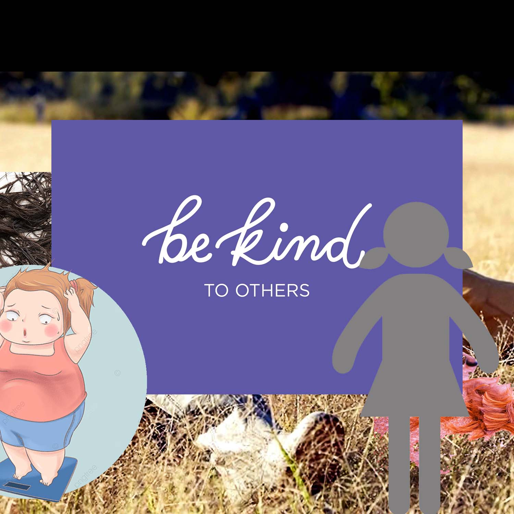
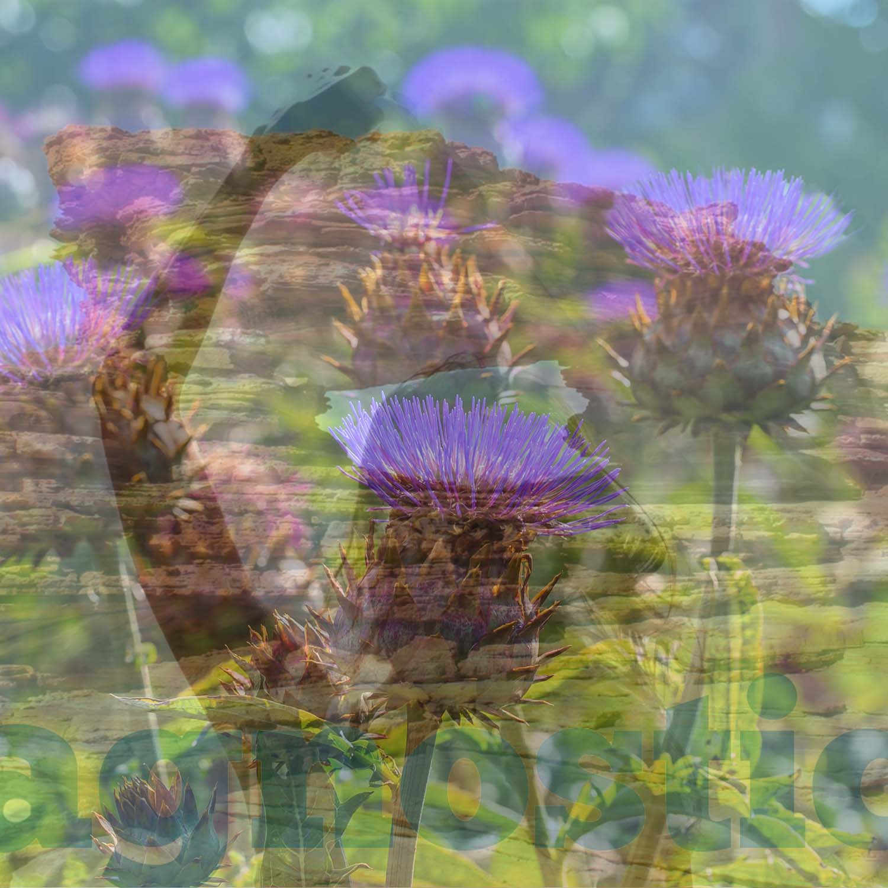

For all three of my collages, I wanted to express how the topic made me feel as well as how the process made me feel. I used mainly color theory to push my ideas to the viewer. Intelligence makes me feel warm-hearted, free, but also a little OCD. This is where I feel most confident about myself. Physical appearance makes me a little uneasy, so I tried to display that with clashing colors and types of imagery you wouldn’t usually see together under normal design principles. While I’ve admitted a bit of struggle with my spirituality, as I have come of age I’ve realized how freeing it can feel. I showed my feelings of freedom with a calming collection of colors, blue, lavender, and green.
 